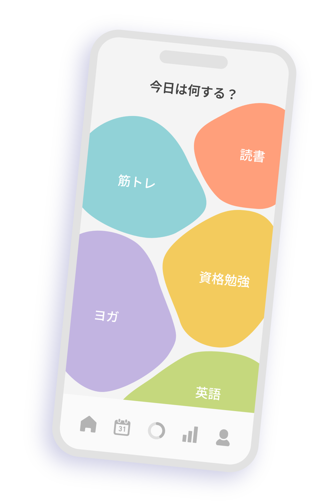
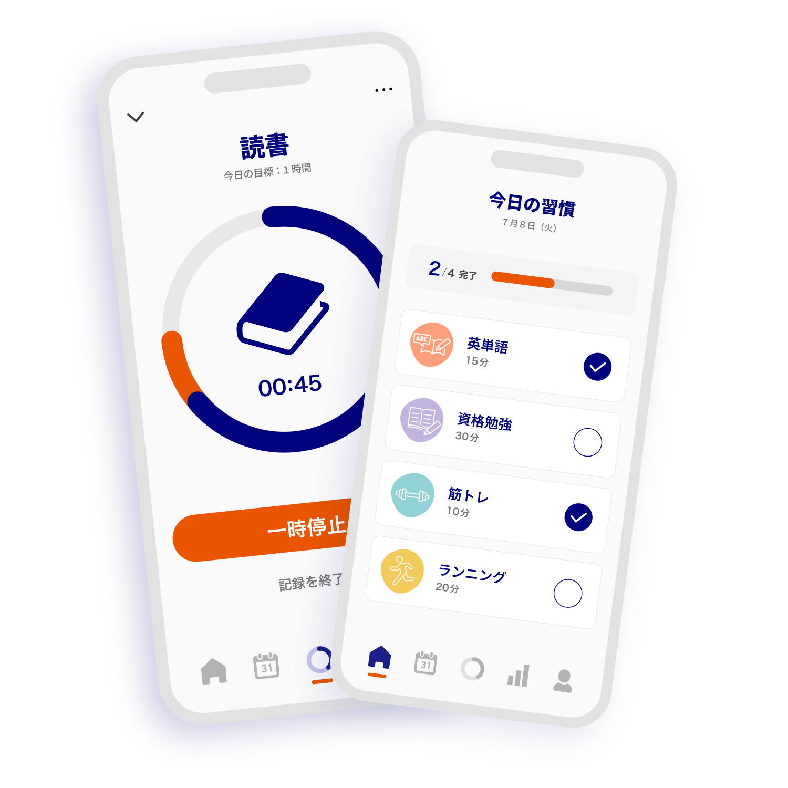
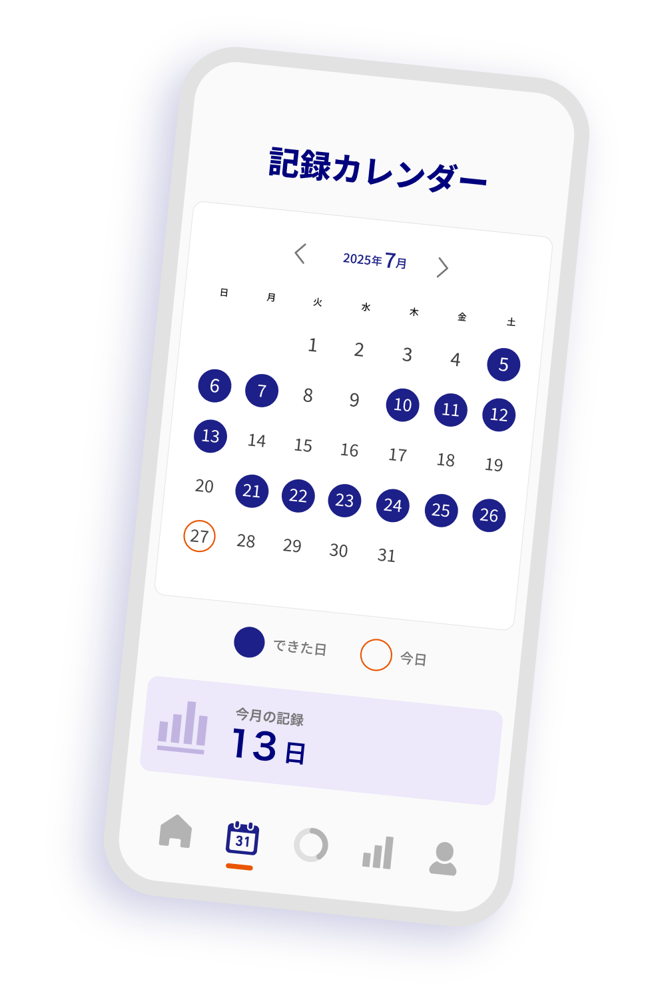
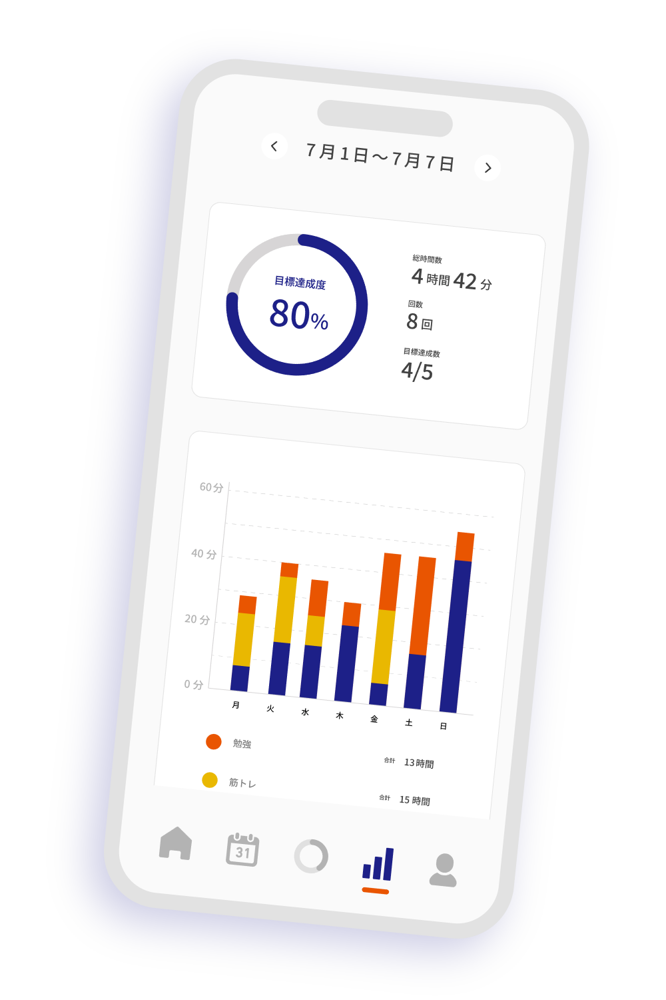
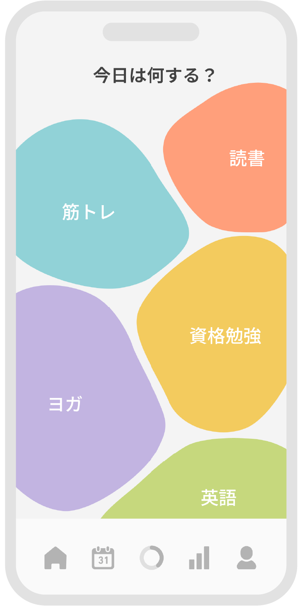
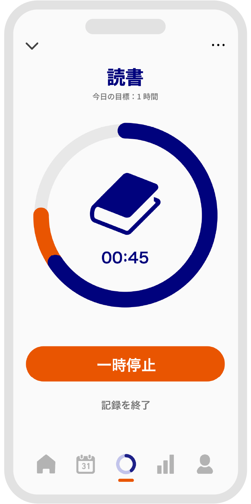
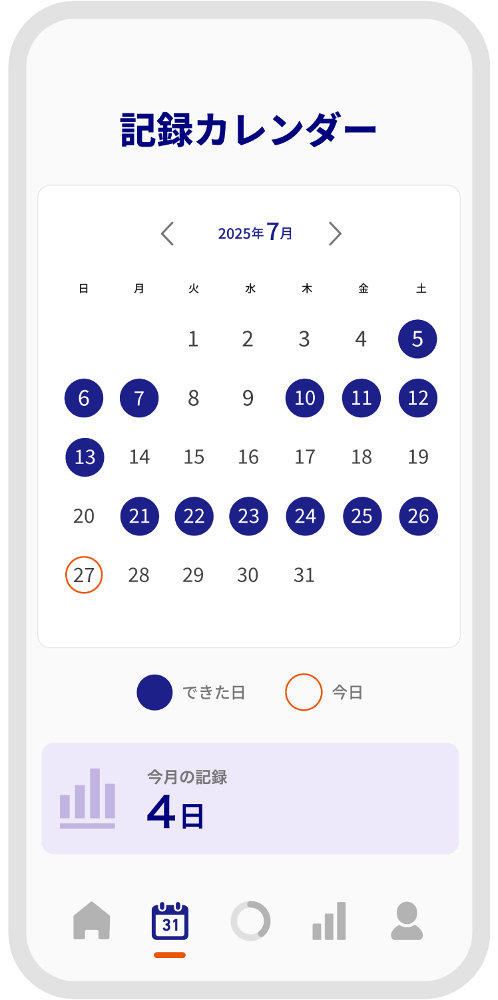

「あとでやろう」 を、
「やった」
に変えていく。
やりたいことを、今日のひとつに。
選ぶ・記録する・振り返るを、やさしくつなぐ習慣サポートアプリ。
ABOUT HIBI
やりたいことはあるのに、
今日も後回し。
仕事や家事、連絡や予定。毎日をこなしているうちに、読書や勉強、運動など、自分のためにやりたかったことはつい後回しになってしまう・・・
hibiは、やることを増やすのではなく、今の自分が取り組む「今日のひとつ」を選びやすくします。
HOW IT WORKS
今日のひとつが、
習慣になるまで。
やることを決めるところから、できたことを見返すところまで。
hibiなら、3つのステップで続けられます。
-
01
CHOOSE
今日のひとつを選ぶ
登録した習慣の中から、今日取り組むものを選びます。今の気分や使える時間に合わせて、ひとつだけで大丈夫です。
-
02
RECORD
自分に合う方法で残す
時間・回数・完了から、行動に合う記録方法を選択。入力の負担を減らして、終わった直後に残せます。
-
03
REVIEW
できたことを見返す
できた日はカレンダーに残り、週ごとのペースも確認できます。完璧さではなく、積み重ねが見えてきます。
FEATURES
無理なく続けるための、
4つの機能。
始める前の迷いを減らし、取り組んだ後の小さな変化まで残します。
01
今日やることを、
すぐ選べる
登録した習慣を、起動後すぐに一覧表示。迷う時間を減らし、今できることから始められます。

02
好きな方法で、
記録できる
勉強は時間、筋トレは回数、単発の行動は完了で記録。内容に合わせて、記録方法を選べます。

03
できた日が、
ひと目で残る
取り組んだ日はカレンダーに記録。毎日でなくても、自分が続けてきた流れを見渡せます。

04
自分のペースが、
見えてくる
行動した時間や回数、達成した目標を週別に表示。グラフで見える積み重ねが自信に繋がります。

A DAY WITH HIBI
hibiのある1日。
08:00
BEFORE GOING OUT
今日のひとつを選ぶ
出かける前に、起動画面から今日取り組みたいことを確認。忙しい日は、短い時間でできるものをひとつ選びます。

12:30
LUNCH BREAK
できる時間だけ取り組む
昼休みに15分本を読む。タイマーで始めれば、記録のために別の操作をする必要はありません。

21:30
END OF THE DAY
できたことを見返す
一日の終わりにカレンダーを確認。できなかったことより、今日残せたひとつを次につなげます。

FOR YOU
こんなあなたに、hibiを。
今日やることを
迷わずひとつに決めたい。
スマホで手軽に、
できたことを記録したい。
自分に合う方法で、
無理なく習慣を続けたい。